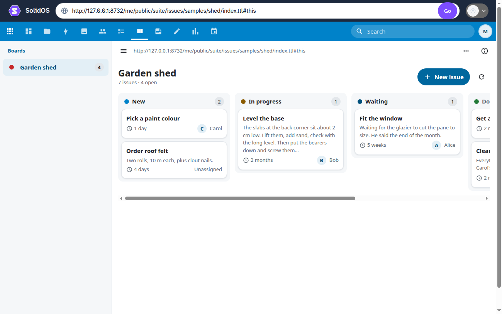
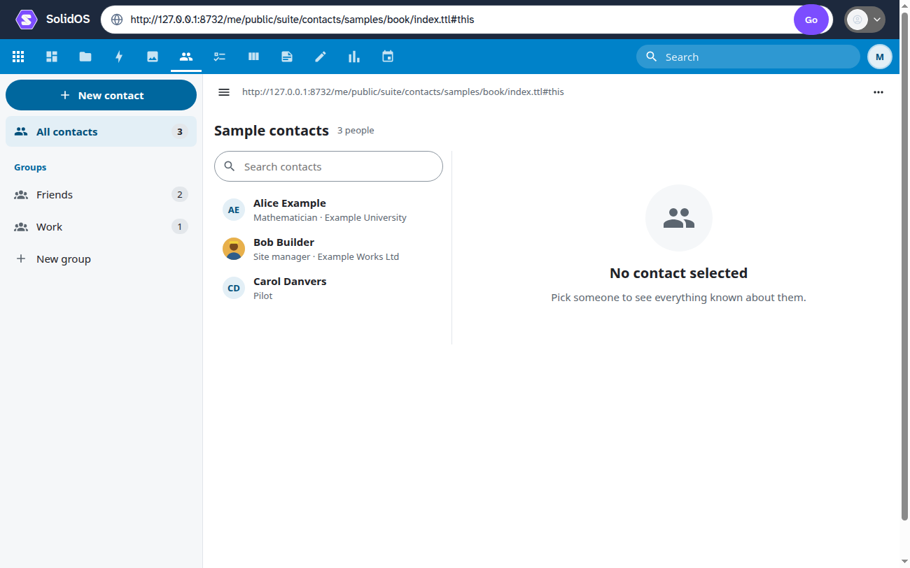
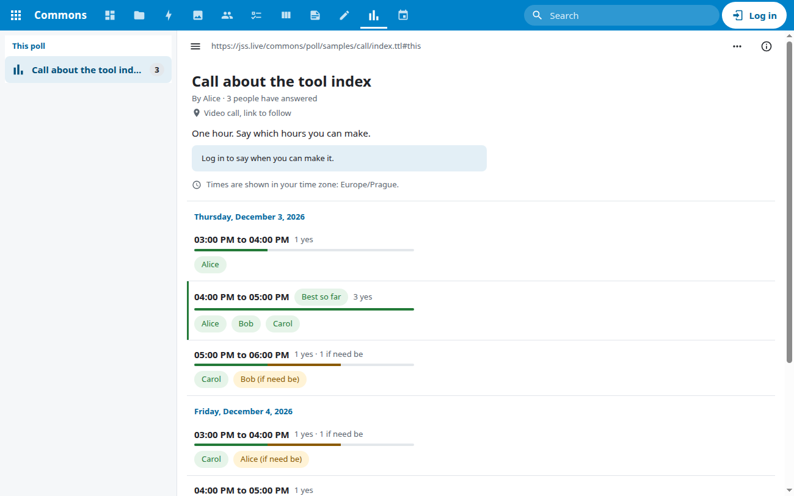
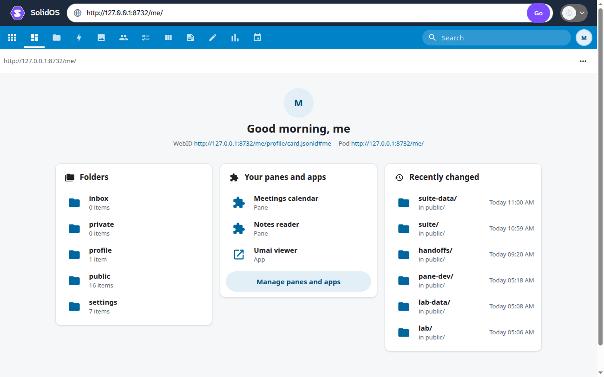

Try it on your pod
Type your pod's address. It opens in the SolidOS data browser, which asks once whether to trust the pane.
Or open an example, no pod needed:
Nothing is installed and nothing is sent to this site: the button only builds a link. A pane runs as you once you log in, so open it only on a pod you are happy to test with.
What is in it
- FilesFolders, upload, rename, delete
- PhotosGallery, audio and video
- ContactsAddress books and groups
- TasksTo-do lists
- BoardsIssue trackers as columns
- NotesMarkdown, with links
- PadsShared notepads
- PollsFind a time, or vote
- MeetingsOne page per meeting
- ActivityWhat changed recently
- SearchBy name across the pod
- SharingWho can see and change what
- Settings and profileTrusted apps, your details
Every app reads and writes ordinary Solid data on your own pod, so other Solid apps see the same data. Each one is a SolidOS pane: one module, no build, no framework.
A look around




Make it your pod's interface
With the JavaScript Solid Server, 0.0.230 or later:
jss start --mashlib-module https://mashlib.com/dynamic/v/0.0.3/dist/boot.js \
--panes https://jss.live/commons/shell/suite-shell-pane.js
Early days
Commons is a first version. It is tested, but it has had few real users. Not here yet: calendar, chat, mail and office documents. Use it on data you have a copy of.
Source and licence
github.com/JavaScriptSolidServer/commons, with a README for each app. AGPL-3.0-or-later, copyright Melvin Carvalho.
The layout is inspired by Nextcloud. Commons is an independent project: it shares no code with Nextcloud and is not affiliated with or endorsed by Nextcloud GmbH. Icons are Material Design Icons (Apache 2.0).